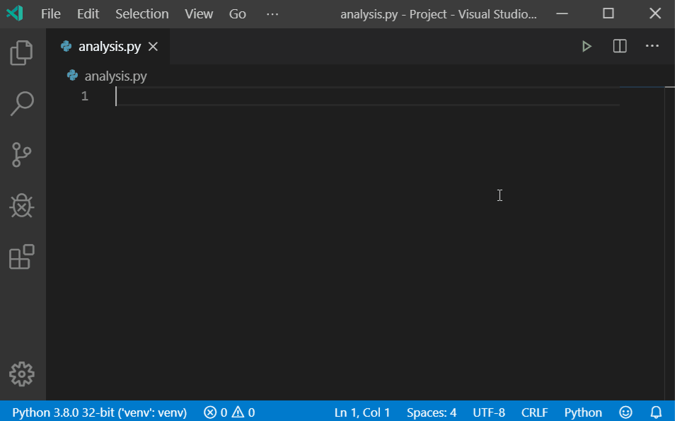
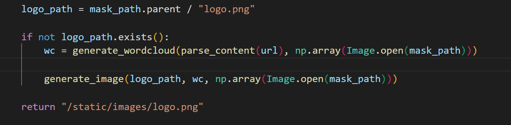
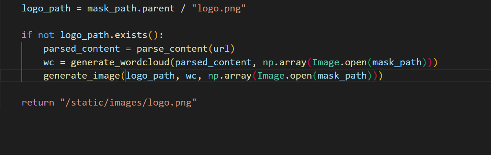
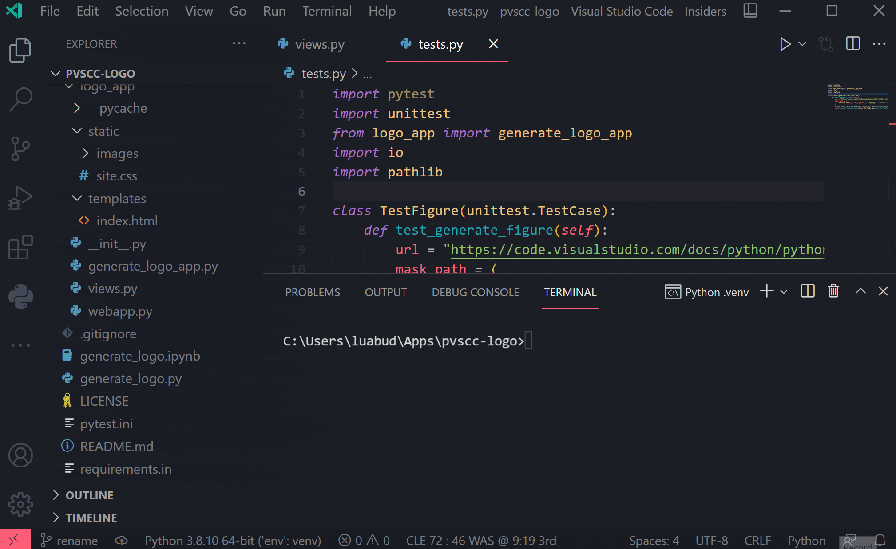
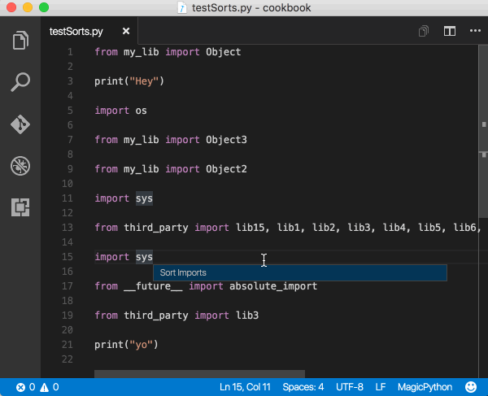

Editing Python in Visual Studio Code
Visual Studio Code is a powerful editing tool for Python source code. The editor includes various features to help you be productive when writing code. For more information about editing in Visual Studio Code, see Basic Editing and Code Navigation.
In this overview, we will describe the specific editing features provided by the Python extension, including steps on how to customize these features via user and workspace settings.
Autocomplete and IntelliSense
IntelliSense is a general term for code editing features that relate to code completion. Take a moment to look at the example below. When print is typed, notice how IntelliSense populates auto-completion options. The user is also given a list of options when they begin to type the variable named greeting.

Autocomplete and IntelliSense are provided for all files within the current working folder. They're also available for Python packages that are installed in standard locations.
For more on IntelliSense generally, see IntelliSense.
Tip: Check out the IntelliCode extension for VS Code. IntelliCode provides a set of AI-assisted capabilities for IntelliSense in Python, such as inferring the most relevant auto-completions based on the current code context. For more information, see the IntelliCode for VS Code FAQ.
Customize IntelliSense behavior
Enabling the full set of IntelliSense features by default could end up making your development experience feel slower, so the Python extension enables a minimum set of features that allow you to be productive while still having a performant experience. However, you can customize the behavior of the analysis engine to your liking through multiple settings.
Enable Auto Imports
Pylance offers auto import suggestions for modules in your workspace and/or packages you have installed in your environment. This enables import statements to be automatically added as you type. Auto imports are disabled by default, but you can enable them by setting python.analysis.autoImportCompletions to true in your settings.
By default, only top-level symbols/packages are suggested to be auto imported. For example, you may see import matplotlib as a suggestion, but not import matplotlib.pyplot by default. However, you can customize this behavior through the python.analysis.packageIndexDepths setting (check out the IntelliSense settings documentation to learn more). User defined symbols (those not coming from installed packages or libraries) are only automatically imported if they have already been used in files opened in the editor. Otherwise, they will only be available through the add imports Quick Fix.
Enable IntelliSense for custom package locations
To enable IntelliSense for packages that are installed in non-standard locations, add those locations to the python.analysis.extraPaths collection in your settings.json file (the default collection is empty). For example, you might have Google App Engine installed in custom locations, specified in app.yaml if you use Flask. In this case, you'd specify those locations as follows:
Windows:
"python.analysis.extraPaths": [
"C:/Program Files (x86)/Google/google_appengine",
"C:/Program Files (x86)/Google/google_appengine/lib/flask-0.12"]
macOS/Linux:
"python.analysis.extraPaths": [
"~/.local/lib/Google/google_appengine",
"~/.local/lib/Google/google_appengine/lib/flask-0.12" ]
For the full list of available IntelliSense controls, you can reference the Python extension code analysis settings and autocomplete settings.
You can also customize the general behavior of autocomplete and IntelliSense, even disable the features completely. You can learn more in Customizing IntelliSense.
Troubleshooting IntelliSense
For autocomplete and IntelliSense issues, check the following causes:
| Cause | Solution |
|---|---|
| Pylance seems slow or is consuming too much memory when working on a large workspace. | If there are subfolders you know can be excluded from Pylance's analysis, you can add their paths to the python.analysis.exclude setting to see if performance improves. Alternatively, you can try setting python.analysis.indexing to false to disable Pylance's indexer (Note: this will also impact the experience of completions and auto imports. Learn more about indexing in code analysis settings). |
| Pylance is only offering top-level symbol options when adding imports. | Try increasing the depth to which Pylance can index your installed libraries through the python.analysis.packageIndexDepths. Check code analysis settings. |
| The path to the python interpreter is incorrect | Make sure you selected a valid interpreter path by running the Python: Select Interpreter command (see Environments). |
| The custom module is located in a non-standard location (not installed using pip). | Add the location to the python.autoComplete.extraPaths setting and restart VS Code. |
Navigation
While editing, you can right-click different identifiers to take advantage of several convenient commands
-
Go to Definition (F12) jumps from your code into the code that defines an object. This command is helpful when you're working with libraries.
-
Peek Definition (⌥F12 (Windows Alt+F12, Linux Ctrl+Shift+F10)), is similar, but displays the definition directly in the editor (making space in the editor window to avoid obscuring any code). Press Escape to close the Peek window or use the x in the upper right corner.
-
Go to Declaration jumps to the point at which the variable or other object is declared in your code.
-
Peek Declaration is similar, but displays the declaration directly in the editor. Again, use Escape or the x in the upper right corner to close the Peek window.
Quick Fixes
The add imports Quick Fix when using Pylance allows you to quickly complete import statements. First, begin by typing a package name within the editor. You will notice a Code Action is available to automatically complete the line of source code (as long as you have the module installed within the environment). Hover over the text (marked with a squiggle) and then select the Code Action light bulb when it appears. You can then select from a list of potential imports.

This Code Action also recognizes some of the popular abbreviations for the following common Python packages: numpy as np, tensorflow as tf, pandas as pd, matplotlib.pyplot as plt, matplotlib, as mpl, math as m, scipi.io as spio, and scipy as sp, panel as pn, and holoviews as hv.

The import suggestions list is ordered with import statements for packages (or modules) at the top. It will also include statements for more modules and/or members (classes, objects, etc.) from specified packages.
Just like with auto imports, only top-levels symbols are suggested by default. You can customize this behavior through the python.analysis.packageIndexDepths setting.
Run Selection/Line in Terminal (REPL)
The Python: Run Selection/Line in Python Terminal command (Shift+Enter) is a simple way to take whatever code is selected, or the code on the current line if there is no selection, and run it in the Python Terminal. An identical Run Selection/Line in Python Terminal command is also available on the context menu for a selection in the editor.
VS Code automatically removes indents based on the first non-empty line of the selection, shifting all other lines left when needed.
Source code that runs in the terminal/REPL is cumulative until the current instance of the terminal is closed.
The command opens the Python Terminal if necessary; you can also open the interactive REPL environment directly using the Python: Start REPL command. (Initial startup might take a few moments especially if the first statement you run is an import.)
On first use of the Python: Run Selection/Line in Python Terminal command, VS Code may send the text to the REPL before that environment is ready, in which case the selection or line isn't run. If you come across this behavior, try the command again when the REPL has finished loading.
Formatting
Formatting makes code easier to read by human beings. It applies specific rules and conventions for line spacing, indents, spacing around operators, and so on. You can view an example on the autopep8 page. Keep in mind, formatting doesn't affect the functionality of the code itself.
Linting helps to prevent errors by analyzing code for common syntactical, stylistic, and functional errors and unconventional programming practices. Although there is a little overlap between formatting and linting, the two capabilities are complementary.
The Python extension supports source code formatting using either autopep8 (the default), black, or yapf.
General formatting settings
| Setting (python.formatting.) |
Default value | Description |
|---|---|---|
| provider | "autopep8" |
Specifies the formatter to use, either "autopep8", "yapf", or "black". |
Formatter-specific settings
The following settings apply to the individual formatters. The Python extension looks for the formatter in the selected interpreter. To use a formatter in another location, specify that location in the appropriate custom path setting. The pip install commands may require elevation.
| Formatter | Install steps | Arguments setting (python.formatting.) |
Custom path setting (python.formatting.) |
|---|---|---|---|
| autopep8 | pip install --upgrade autopep8 | autopep8Args | autopep8Path |
| black (see note) | pip install black | blackArgs | blackPath |
| yapf | pip install yapf | yapfArgs | yapfPath |
Note: By default, the Black formatter can't be installed when a Python 2 environment is active. Attempting to do so may display the message "Formatter black is not installed. Install?". If you try to install Black in response, another message appears saying "Could not find a version that satisfies the requirement black' No matching distribution found for black."
To work around this issue and use the Black formatter with Python 2, first install Black in a Python 3 environment. Then set the
python.formatting.blackPathsetting to that install location.
When using custom arguments, each top-level element of an argument string that's separated by space on the command line must be a separate item in the args list. For example:
"python.formatting.autopep8Args": ["--max-line-length", "120", "--experimental"],
"python.formatting.yapfArgs": ["--style", "{based_on_style: chromium, indent_width: 2}"],
"python.formatting.blackArgs": ["--line-length", "100"]
In the second example, the top-level element {based_on_style: chromium, indent_width: 2} is a single value contained in braces, so the spaces within that value don't delineate a separate element.
Troubleshooting formatting
If formatting fails, check the following possible causes:
| Cause | Solution |
|---|---|
| The path to the python interpreter is incorrect. | Make sure you selected a valid interpreter path by running the Python: Select Interpreter command. |
| The formatter is not installed in the current environment. | Open a command prompt, navigate to the location where your selected interpreter is, and run pip install for the formatter. |
| The path to the formatter is incorrect. | Check the value of the appropriate python.formatting.<formatter>Path setting. |
| Custom arguments for the formatter are incorrect. | Check that the appropriate python.formatting.<formatter>Path setting does not contain arguments, and that python.formatting.<formatter>Args contains a list of individual top-level argument elements such as "python.formatting.yapfArgs": ["--style", "{based_on_style: chromium, indent_width: 2}"]. |
Pop up with warning message Black does not support the "Format Select" command. |
black does not support formatting sections of code, it can be prevented with the following settings "[python]": {"editor.formatOnPaste": false, "editor.formatOnSaveMode": "file"}. |
Note: If you don't find your preferred formatter listed above, you can add support via an extension. The Python Extension Template makes it easy to integrate new Python tools into VS Code.
Refactoring
The Python extension adds the following refactoring functionalities: Extract Variable, Extract Method, Rename Module, and Sort Imports.
Extract Variable
Extracts all similar occurrences of the selected text within the current scope, and replaces it with a new variable.
You can invoke this command by selecting the line of code you wish to extract as a variable. Then select the light-bulb that is displayed next to it.

Extract Method
Extracts all similar occurrences of the selected expression or block within the current scope, and replaces it with a method call.
You can invoke this command by selecting the lines of code you wish to extract as a method. Then select the light-bulb that is displayed next to it.

Rename Module
After a Python file/module is renamed, Pylance can find all instances that may need to be updated and provide you with a preview of all the changes.
To customize which references need to be updated, you can toggle the checkboxes at the line or from the file level in Refactor Preview. Once you've made your selections, you can select Apply Refactoring or Discard Refactoring.

Sort Imports
Sort Imports uses the isort package to consolidate specific imports from the same module into a single import statement and to organize import statements in alphabetical order.
Invoked by:
- Right-click in editor and select Sort Imports (no selection is required)
- Command Palette (⇧⌘P (Windows, Linux Ctrl+Shift+P)), then Python Refactor: Sort Imports
- Assign a keyboard shortcut to the
python.sortImportscommand

Custom arguments to isort are specified in the python.sortImports.args setting, where each top-level element, as separated by spaces on the command line, is a separate item in the array:
"python.sortImports.args": ["-rc", "--atomic"],
To use a custom isort script, use the python.sortImports.path setting to specify the path.
Further configurations can be stored in an .isort.cfg file as documented on isort configuration.
Note: For those migrating from isort4 to isort5, some CLI flags and config options have changed, refer to the project's isort5 upgrade guide.
Next steps
- Linting - Enable, configure, and apply various Python linters.
- Debugging - Learn to debug Python both locally and remotely.
- Testing - Configure test environments and discover, run, and debug tests.
- Basic Editing - Learn about the powerful VS Code editor.
- Code Navigation - Move quickly through your source code.
- IntelliSense - Learn about IntelliSense features.
- Jupyter Support - Learn how to get started with Jupyter Notebooks.
- Python Extension Template - Create an extension to integrate your favorite Python tools.